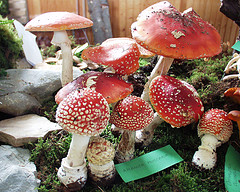
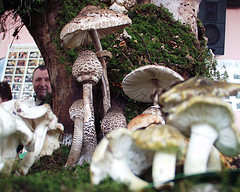
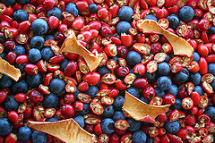
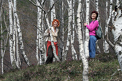

Jesenje radosti
Jedna od najlepših manifestacija za koju znam u Srbiji su Dani gljiva na Divčibarama (jeste, imamo i Čvarkijade, Kobasicijade, Svetsko prvenstvo u tucanju jajima, i Dan maline u Brankovini, pa Sajam šljive u Osečini, pa Dragačevski sabor trubača... sve je to ništa u poređenju sa Mushroom days).
Ovaj događaj organizuje Gljivarsko društvo iz Valjeva (sajt je... brrrr! pažljivo klikći!) prvog vikenda u oktobru.
Znači, u petak posle podne sedaš u kola, stižeš na Divčibare taman pred večeru. Šetnja po planinskom mraku bi trebalo da onog već opisanog prezaposlenog čoveka na najefikasniji način oslobodi stresa; tako opušteni čovek zaspi kao mačkica, a novo jutro, rezak planinski vazduh i - hopefully!! - obilje sunca obećavaju sjajnu, nezaboravnu zabavu.
Šta su sve Dani gljiva? Obratimo se zvaničnom sajtu u pomoć; dakle:
Ova manifestacija se sastoji od više, po prirodi raznovrsnih, a po temi srodnih programa. Tako se organizuje prigodna, edukativna, izložba sveže nabranih, proizvedenih i prerađenih gljiva. Pored gljiva svih vrsta posetioci imaju priliku da razgledajuju i prateće izložbe sa propratnom literaturom, stručnim časopisima o gljivama, kao i izložbe fotografija i dečijih crteža. Jedan od stalnih programa je okrugli sto na kom se govori o značaju, zaštiti, pravilnom korišćenju gljiva, lekovitim svojstvima, otrovnosti gljiva, kao i zanimljivostima iz sveta gljiva.
Pored okruglog stola važan sadržaj svakog dana gljiva su i veoma korisna predavanja koja drže naši najeminentniji stručnjaci.
Naravno, kako gljivarstvo nije pasija koja se završava na teoriji, u okviru manifestacije se organizuju i izleti na kojima se posetioci na licu mesta, u prirodi, upoznaju sa jestivim gljivama, u čemu im pomažu stručni i iskusni vodiči. I na kraju, celokupan doživljaj je upotpunjen pripremom i degustacijom gljiva ubranih na izletu. A uz sve to druženje koje se ne zaboravlja. Nije slučajno što je ova manifestacija već godinama pobudjuje veliku pažnju stručnjaka i biva masovno posećena. DOĐITE I VI.
Osim što se može pogledati impresivna izložba više desetina vrsta pečuraka, jesti gulaš od gljiva i poslušati neko predavanjce, zgodno je to što uz Gljivarsko društvo uvek ide i Društvo za proučavanje lekovitog bilja iz istog grada. Ovi fini ljudi običavaju da naprave više vrsta travarica, i svaka je tako pitka i zdrava da se tebi preumorni čoveče preporučuje degustiranje svake od ponuđenih vrsta.
Posle toga išetaj na divčibarske livade i šumarke, a predveče vidi da se negde uvališ na pečurke sa roštilja (ukoliko nemaš izbora, možeš i ti biti organizator i roštilj controller, ali bolje da se ne umaraš, već da nastaviš da proučavaš sve te majčine dušice i hajdučke trave zarobljene u domestic brandy-ju).
Nedelja može da se iskoristi za nastavak aktivnosti u prirodi, u kojoj ne rastu samo gljive, već čitav spektar najraznobojinih kiselkastih, koncentrovanih šumskih bobica (drenjine, trnjine, šipurak...) koje ćeš osušiti i tokom zime koristiti u obliku čaja, pekmeza, a zašto ne i klekovače.
Prošle godine su događaj potpuno zajebali kiša, magla i hladno vreme, hajmo svi zajedno poželeti lijep i sunčan vikend!
 RSS feed
RSS feed
 sadržaji se objavljuju pod
sadržaji se objavljuju pod
Komentari
Dobar dan dobri ljudi,
zovem se Nemanja maksimovic,i veoma mi se svidja to cime se bavite i kako se time bavite.Sad trenutno zivim u tokiyu(japan),ali se kanim vracati za srbiju vec sledece godine.pre nego sto se vratim konacno dolazim jedanput na kratko pocetkom oktobra,i dovodim u posetu nekoliko japanaca.obavezno dolazimo na divcibare,vidimo se.
mene licno interesuju tartufi,sve o njima i gde ih ima u srbiji.ako vam nije tesko da me upoznate malo zamolio bih vas.
i vama isto ako treba nesto odavde,slobodno recite.
pozdrav
Nemanja Maksimovic | 09.08.07 04:12
Na zalost, nista konkretno, osim onoga sto se moze naci na netu.
Sto se tice Japana, bilo bi super procitati neku pricu o zivotu tamo iz prve ruke i videti zanimljive slike, ako hoces da gostujes sa jednim postom ovde, dobrodosao si:)
La Lara | 10.08.07 14:06
“DANI GLJIVA na valjevskim planinama”
2007 Divčibare hotel „Maljen“
PROGRAM:
SUBOTA 06.oktobar hotel „Maljen“
11. Otvaranje manifestacije:
-Izložba svežih, suvih, mariniranih gljiva;
-stručna objašnjenja o izloženim gljivama;
-izložba lekovitog bilja;
-stručna objašnjenja o izloženom bilju;
-izložba dečijih crteža;
-izložba fotografija Svete Kovačevića;
-izložba knjiga, postera, razglednica, časopisa o gljivama i lekovitom bilju (kupovina, prodaja, razmena).
12.30-14.00 Proglašenje i nagrađivanje najboljih crteža
14.00-15.00 Degustacija gulaša od gljiva
15.00-17.00 Branje gljiva u pratnji stručnog vodiča
17. Stručna predavanja i razgovori
-Kolaž raznih predavanja i prezentacija
21.00 Gljivarska žurka, svira „LIGO AVRIO“ možda bude i u petak veče.
NEDELJA 07.oktobar
10. Branje gljiva u pratnji stručnog vodiča
Po želji obilazak Etno-domaćinstva Mila Obradovića u Podbukovima, nedaleko od Divčibara, koji se bavi seoskim turizmom,
ko želi može poručiti ručak u nedelju, domaći specilaliteti pite od kopriva, ili pak pečenje...
014-255-114, 064-281-23-65
11.00 Determinacija ubranih gljiva
12.00 Zatvaranje manifestacije
PRATEĆI PROGRAM - IZLOŽBE
Istraživači, planinari, Udruženje domaćina-seoski turizam,
Ekološko društvo „Zeleni bicikl”, i mnogo toga još
DODATNE INFORMACIJE
Gljivarsko društvo Valjevo 014-225-745, 063-278-941, mushroom@ptt.yu
Smeštaj hotel „Maljen” 014-277-234.
Kako je bilo na Danima gljiva:
http://yahti.com/2006/09/jesenje_radosti.html
Kako je bilo prosle godine na Danima gljiva:
http://www.treasurekeepers.org.yu/sr/Izlozbe_gljiva/Protekle/2006/divcibare/index.htm
A sta kazu na forumu
http://mojforum.org/phpBB2/fungi/viewtopic.php?f=30&t=16#p20
Plan Divcibara
http://www.ptt.yu/korisnici/m/u/mushroom/karta_divcibara.htm
Karta podrucja
http://www.domaciniva.org.yu/karta.htm
Putni pravci Valjevo
http://www.domaciniva.org.yu/putni%20pravci.html
Gljivarsko drustvo Valjevo | 30.09.07 12:38